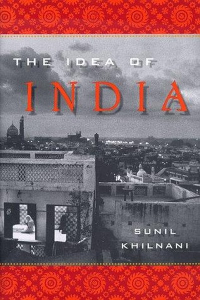

Library › History
The Idea of India — Summary & Key Lessons

How a nation of 350 million arguments became the world's largest democracy.
📖 OPEN THE FULL INTERACTIVE BREAKDOWN →🌐 Read it in Hindi, Hinglish, Gujarati, Tamil & 22 more languages — free, with audio.
💡 The Big Idea
India was not born from a common language, religion or ethnicity — it was invented as an idea: a democratic republic where a billion different identities argue, negotiate and coexist. Its strength is not harmony but the institutional machinery — elections, courts, federalism, free press — that converts conflict into progress instead of civil war.
🧠 The 6 Key Lessons
Lesson 1: Unity Can Be Built From Difference
Chapter 1: The Idea
Khilnani shows that India had no single founding identity — no common language, no shared religion, no single history. What bound it was a constitutional bet: that people with different gods, foods and scripts could live as one nation if the rules were fair and the arguments were open.
📖 Example: The Constituent Assembly debated for three years, producing a constitution that balanced federal power, minority rights and social justice. Speakers used multiple languages, and no single group got everything — the document itself is a monument to the idea… Read the full example →
⚡ Do this: In your team or family, stop demanding sameness. Codify fair rules for disagreement and let differences become features, not threats.
Lesson 2: Institutions Outlast Personalities
Chapter 2: The Institutions
Nehru, Patel and Ambedkar built courts, elections and bureaucracies that could survive any individual leader. Khilnani's point: charisma passes, but institutions compound. Any movement or company that depends on one brilliant person is fragile; one that builds systems is durable.
📖 Example: India's Election Commission, established as an independent body, has peacefully transferred power between rival parties dozens of times — even in the world's largest electorate. Compare that with countries where one strongman is the system, and the whole… Read the full example →
⚡ Do this: Write down which of your key results depend on you personally. Build a process, checklist or successor so the result survives without you.
Lesson 3: Argument Is a Feature, Not a Bug
Chapter 3: The Arguments
The noisy arguments of Indian democracy — in parliament, courts, press and streets — look like dysfunction but are actually the machinery of problem-solving. Societies that suppress argument achieve silence, not peace. The real danger is not conflict but the absence of safe channels for it.
📖 Example: India's free press and activist courts have repeatedly exposed corruption, from emergency-era abuses to landmark right-to-information victories. The 'chaos' of public debate caught what closed systems missed — accountability flows through open argument. Read the full example →
⚡ Do this: Create a safe channel for dissent in your team — a weekly 'argue the plan' session where the junior-most person speaks first.
Lesson 4: Citizens Are Made, Not Born
Chapter 4: The Citizens
For Khilnani, democracy requires citizens who believe their vote, voice and rights matter. India's story is the slow, unfinished making of citizens out of subjects — people learning to demand, organize and hold power accountable. Empowerment is a skill that must be practiced.
📖 Example: From the anti-corruption movements to thousands of village panchayats where women now preside, ordinary Indians have repeatedly discovered that organized voice changes outcomes. Each generation of citizens re-learns that democracy is not a spectator sport. Read the full example →
⚡ Do this: Practice being a citizen where you work: question one unfair policy through the proper channel instead of silently resenting it.
Lesson 5: Patience Is a Strategy, Not a Weakness
Chapter 5: The Reforms
India's economic and social transformation came slowly, through negotiation rather than revolution — and that slowness bought stability. Khilnani cautions against despising incremental progress. What looks like frustrating delay often is the price of keeping a billion people on board.
📖 Example: Economic liberalization took decades of coalition politics and consensus-building, but because it was negotiated rather than imposed, the reforms were not reversed — unlike 'shock therapy' programs elsewhere that triggered collapse and backlash. Read the full example →
⚡ Do this: When a big change stalls, stop cursing the slowness and ask: what consensus is missing? Build it, then move.
Lesson 6: Democracy Is Never Finished
Chapter 6: The Future
The idea of India is a permanent project: each generation must re-argue what fairness means. Khilnani warns against triumphalism — democracies decay when citizens stop paying attention. Institutions are alive only while people use them; neglect is the real coup.
📖 Example: India's greatest crises — the Emergency, communal violence, corruption scandals — were all moments when institutions were stressed by indifference or power-grab. Each time, citizens, courts and the press pulled the country back, but only because enough… Read the full example →
⚡ Do this: Treat your own 'institutions' — team rituals, family norms, personal systems — as living things that need daily use, not once-a-year maintenance.
✅ 5-Step Action Plan
- Codify one fair rule for disagreement in your team or family this week
- Identify one result that depends on you alone and build a system for it
- Start a weekly 'argue the plan' session where the junior-most speaks first
- Challenge one unfair policy through proper channels instead of resenting it
- Audit your personal systems — rituals, routines, norms — and revive the neglected ones
⚠️ When This Doesn't Work
⚠️ When this doesn't work: The 'argument as strength' model assumes everyone argues in good faith with fair rules. In workplaces with real power asymmetry, open argument can get juniors punished. Ensure psychological safety first, and don't romanticize endless debate — some decisions need a deadline.
💀 The Graveyard Proves It
👑 The Nanda Empire — The Richest Empire in India, Lost Because the King Couldn't Keep a Promise. Burn: An empire of legendary wealth — overthrown in a generation. Read the full case study →
💬 Best Quotes from The Idea of India
- “India's is not a unity of sameness but a unity of difference.”
- “The idea of India is an idea of argument — argument as a way of life.”
- “Democracy was not India's problem; it was India's solution.”
Interactive version: mark lessons as read, listen in your language, share quote cards.